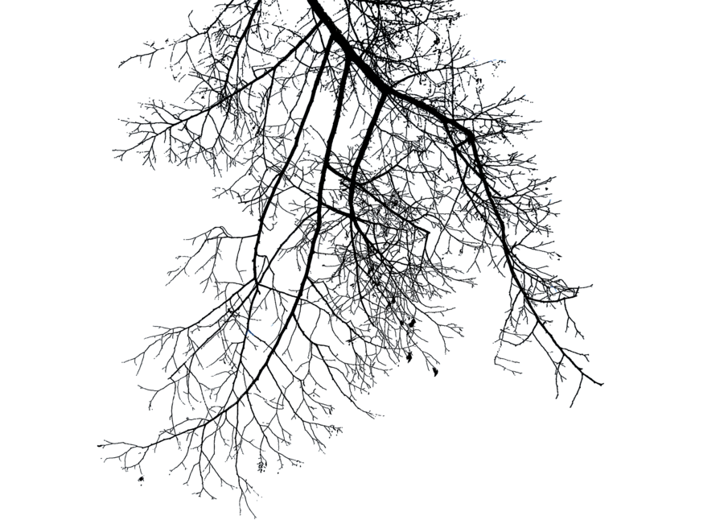
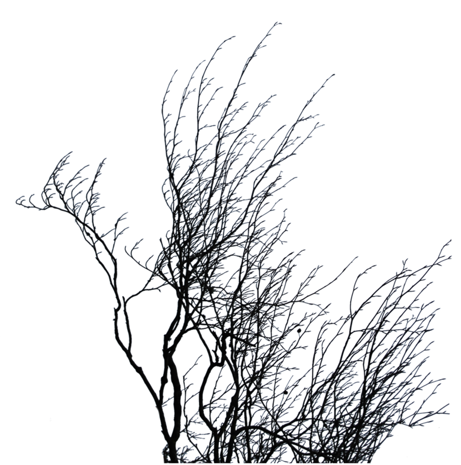
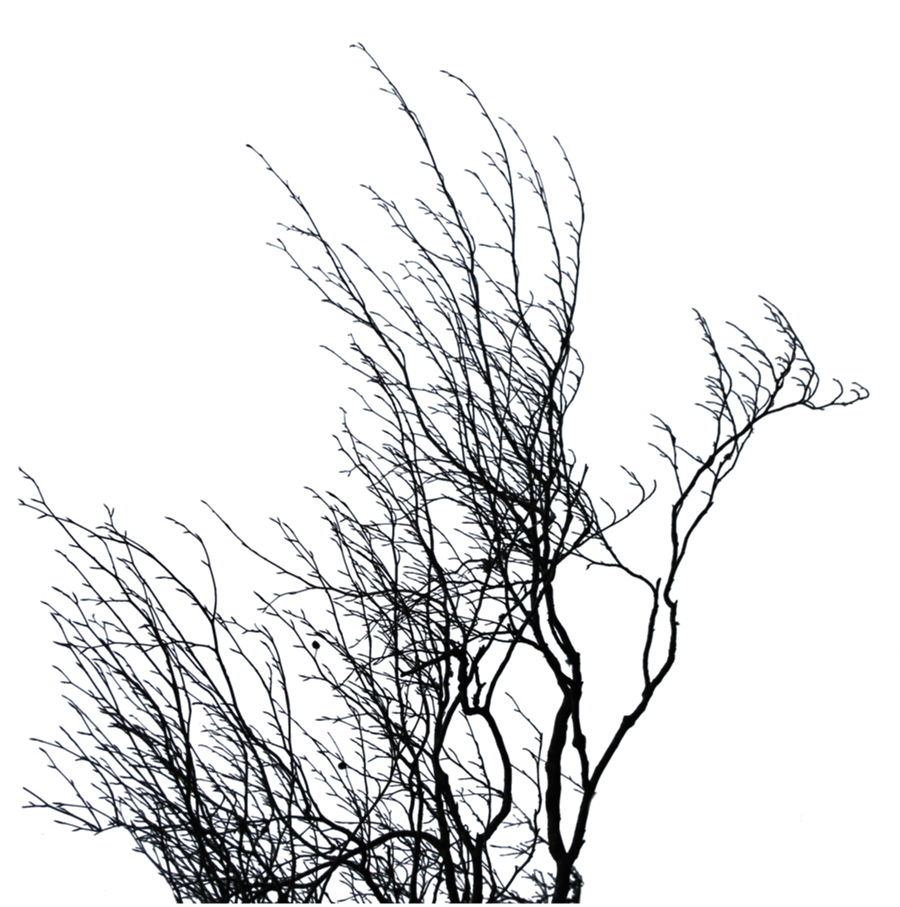
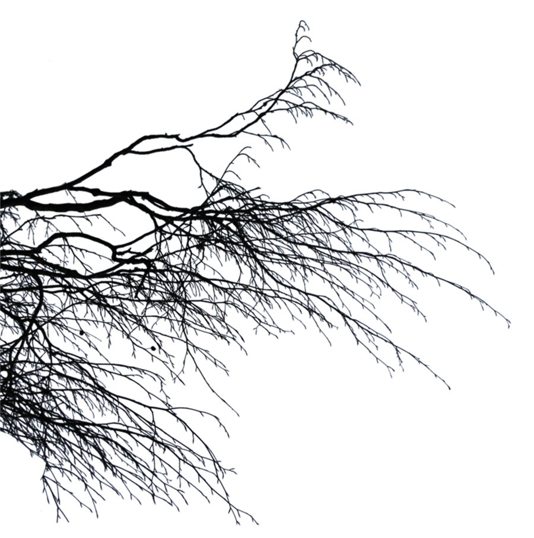
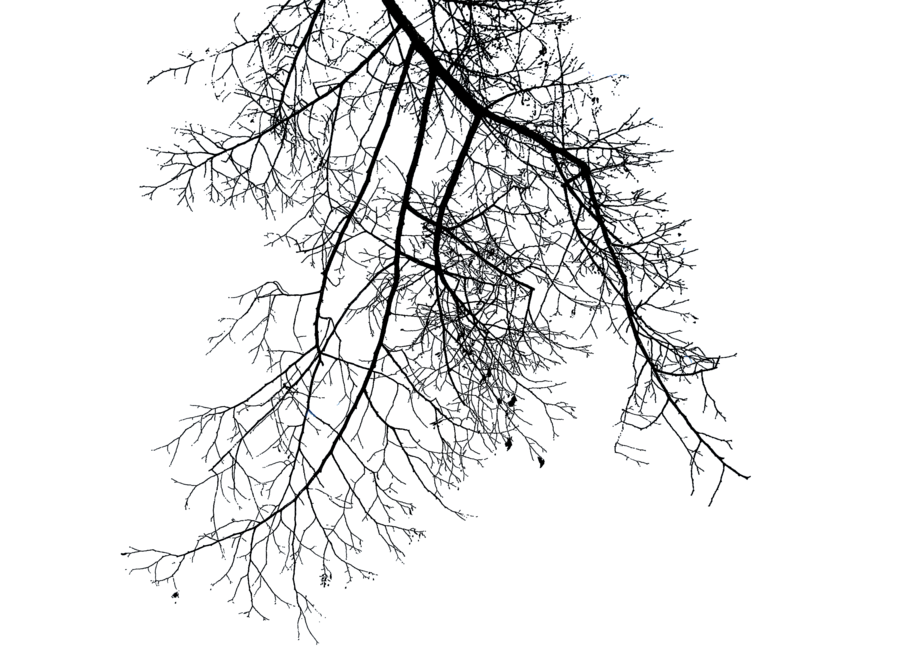
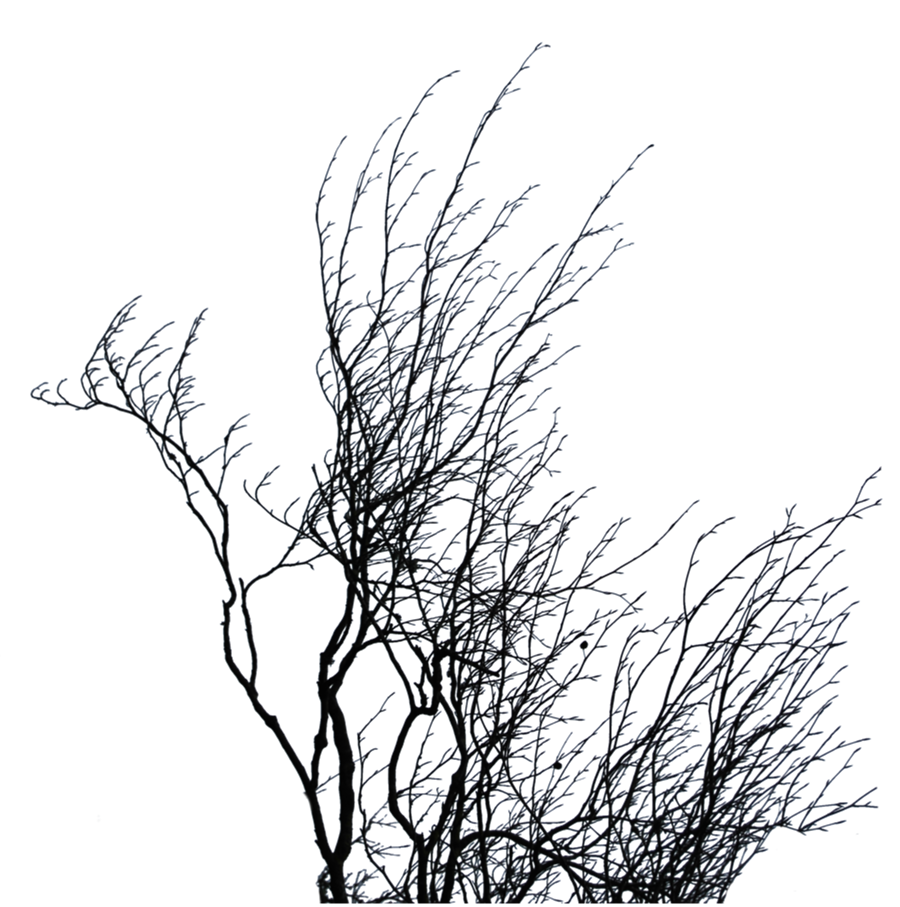
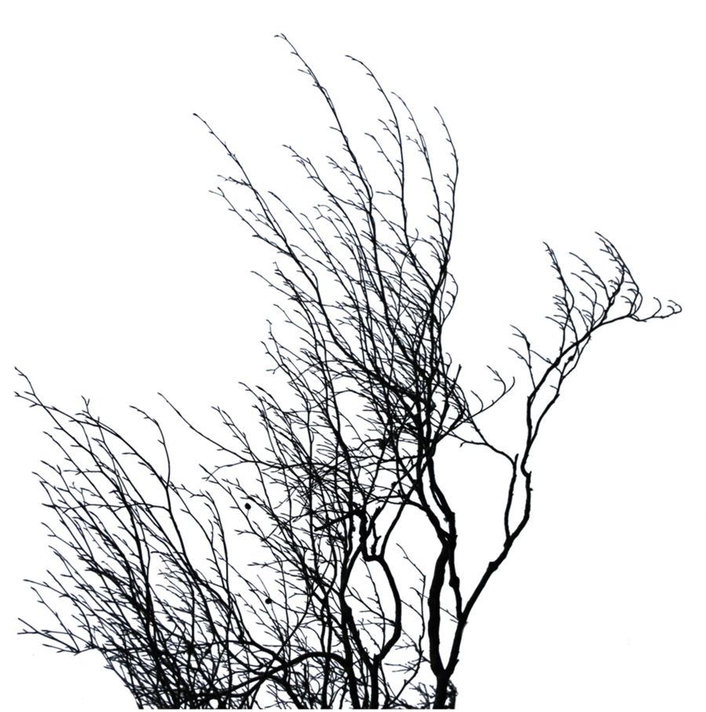
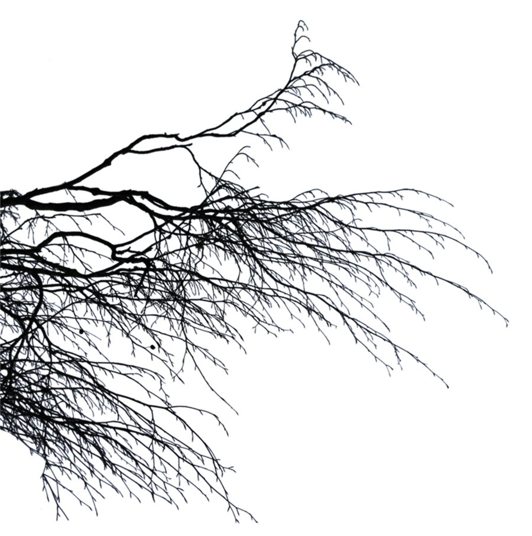

To zwyczajna historia, która mogła przydarzyć się każdemu z nas. Gdy do spokojnej i malowniczej krainy przybywa smok, jej mieszkańcy przeczuwają, że potworowi nie należy ufać. Już pierwszego dnia swojego pobytu w nowym miejscu smok rozpala do czerwoności jedną z tutejszych wiosek. Ten występek sprawia, że ludzie zaczynają traktować bestię z dystansemu, najczęściej strzałami, nachodzą ją w nocy z widłami i obrzucają obelżywymi tekstami.
Czy narastający konflikt jest tylko preludium do poważnego dramatu, który odciśnie niezmywalne piętno na mieszkańcach tej coraz mniej cichej i coraz mniej uroczej krainy?
Czy znajdzie się ktoś, kto uwolni którąkolwiek ze stron konfilktu od bólu istnienia?
Czy tym kimś będziesz Ty?
Instrukcje:
Przed przystąpieniem do walki, musisz wybrać przy ognisku jednego z trzech śmiałków, którzy chętnie będą walczyć pod Twoim dowództwem.
Wojownik dysponuje ogromną siłą, lecz ciężar jego dwuręcznego miecza uniemożliwia mu wyprowadzanie szybkich ataków i zręczne unikanie ciosów smoka. Z tego powodu nie nosi pancerza, który dodatkowo ograniczałby jego sprawność.
Rycerz to doświadczony pogromca smoków. Jest silny i wytrzymały, jednak ciężka płytowa zbroja znacznie ogranicza jego zręczność.
Łowca nie potrafi co prawda wyprowadzać potężnych ataków, ale jego nieprawdopodobna zręczność sprawia, że z łatwością unika smoczych uderzeń i mając więcej czasu, by dokładnie trafić w cel, odpowiada szybkimi i skutecznymi ciosami. Lekka skórzana zbroja nieco zwiększa jego szansę na przetrzymanie prób smoka, jednak daleko jej do ochrony jaką daje płytowa zbroja.
Kowal stara się stopniowo powiększać lub zmienia swoją ofertę. Można u niego nabyć zarówno doskonałe wyroby własne, jak i perełki znalezione od kupców z całego świata. Każdy z przedmiotów może polepszać lub pogarszać określone statystyki. Pamiętaj, że gdy postać ginie, wraz z nią przepada ekwipunek, w który została wyposażona, a także wydane na niego pieniądze. Staraj się nie pozbywać całej kwoty na uzbrojenie jednego bohatera. Dobrze dobrany sprzęt to klucz do sukcesu.
Walka nie jest łatwa i wymaga dobrego refleksu i precyzji. Pojedynek polega na trafianiu w poszczególne części ciała smoka, dopóki jedna ze stron nie zginie. Miejsca, w które należy celować wyświetlają się losowo i bohater ma tylko chwilę na uderzenie w dany punkt (uderzenie odbywa się poprzez kliknięcie na wyświetlającą się ikonę celownika). Czas i częstotliwość pojawiania się celów zależy od zręczności bohatera.
Samo kliknięcie celownika nie oznacza jeszcze ataku zakończonego trafieniem i zadaniem obrażeń. Trudność trafienia zależy od części ciała smoka, która została zaatakowana.
Brzuch smoka jest pokryty twardą skórą i łuskami, jednak w paru miejscach łuski odpadły, odsłaniając jego ciało. To bardzo wrażliwe punkty, choć trafienie w nie graniczy z cudem.
Głowa smoka pozostaje w ciągłym ruchu i trudno jest ją zaatakować, gdy po drodze czekają na śmiałka łapy bestii. Niemniej dobrze wyprowadzony cios może znacząco przybliżyć smoka do kresu jego ziemskiej wędrówki.
Łapy smoka nieustannie próbują sięgnąć bohatera, dlatego próby skaleczenia ich mają spore szanse powodzenia.
Trzon skrzydła smoka ze względu na swoje położenie jest trudny do trafienia, aczkolwiek można nim wyrządzić sporą krzywdę potworowi.
Skrzydło smoka jest łatwym celem, jednak istnieje spore prawdopodobieństwo, że bestia nawet go nie odczuje.
 






